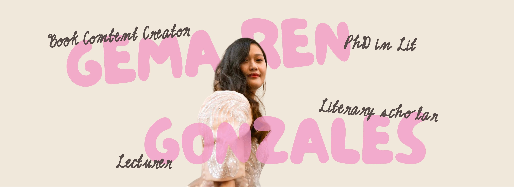

get to know me
I'm Ren, the Filipina content creator behind A Delicate Reader.
I did my PhD at the Sorbonne Nouvelle in Paris, France and studied gastropoetics in Southeast Asian literature (basically, how women writers use foodspeak to write resistance). It sounds niche (it is!) but it reunites everything I'm passionate about, as in food, literature and resistance writing. These days I split my time between two identities: book content creator and literary scholar. I read and recommend literary fiction and world literature on my instagram. I also try to bring some of what I learned in academia out from behind the paywall.
I'm a firm believer that academic research doesn't have to stay locked in journals, and that it can live in a caption or a carousel. If you are looking to read diversely or to learn more about the kind of research being done in the humanities today, follow along!
Connect with me through my channels.
read my research
questions? I've got answers
Thank you for your interest in my research! My dissertation is written in French but you're very welcome to read it.
You can access the full manuscript here.
I love sharing my research in ways that are accessible beyond academia.
If you'd like to follow along, I'd love to have you there!
Yes! Reading lists are one of my favorite things to curate. I'll be sharing recommendations on food studies, literary studies, postcolonial studies, feminist theory, Southeast Asian studies, and related topics on my Substack.
If that sounds like your kind of reading, I'd love for you to subscribe!
Thank you so much for thinking of me and trusting me with your work. I receive quite a few requests for feedback and unfortunately I don't have the capacity to provide individual reviews of research proposals, theses, or application materials.
I wish you all the best with your research journey.
Absolutely! If you think we'd be a good fit, I'd love to hear from you.
Please send me an email (adelicatereader@gmail.com) and I'll get back to you as soon as I can.
Yes! I'm available for invited talks, workshops, guest lectures, podcasts, and other speaking engagements related to my areas of expertise.
If you'd like to discuss an opportunity, please email me (adelicatereader@gmail.com). I'd be happy to chat!
let's read together
Each month we pair one work of fiction with one accessible academic article from a different field of study. Together we'll explore stories through new lenses, from food studies and folklore to ecocriticism and disability studies. You don't need an academic background to join us. Bring your curiosity, your questions, and your love of reading!